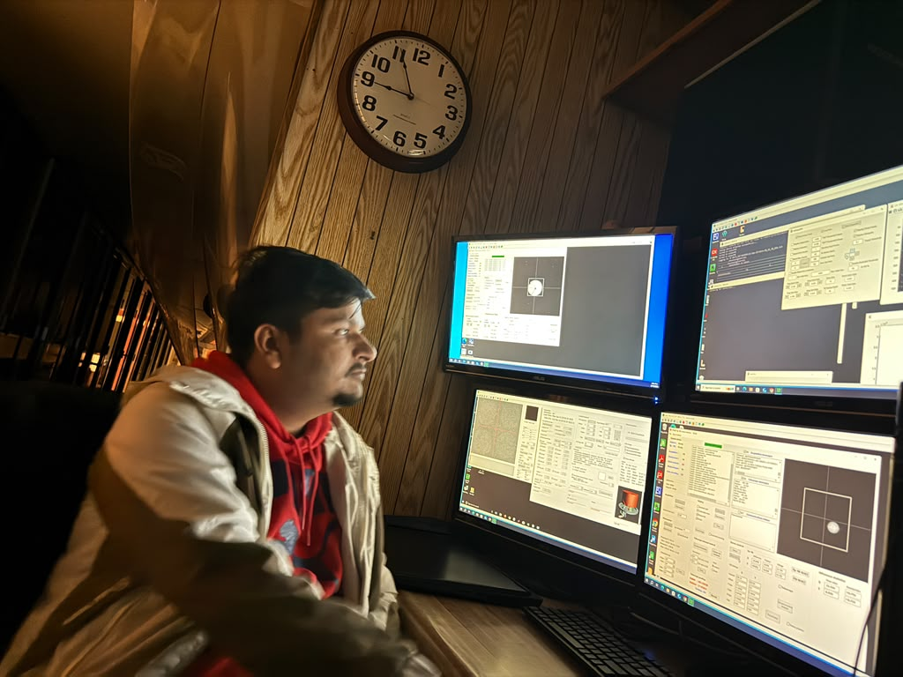

Department of Astronomy
PO Box 30001, MSC 4500
Las Cruces, NM 88003, USA kkatuwal@nmsu.edu

Publications
Peer-Reviewed Publications
2026:Katuwal, K., & McAteer, R. T. J. (2026). Unipolarity of the Solar Magnetic Field in Equatorial Coronal Holes.The Astrophysical Journal, 999, 63. DOI: 10.3847/1538-4357/ae41ba
2026:Katuwal, K., McAteer, R. T. J., & Yadav, R. High-Resolution DKIST/ViSP Observations Reveal Small-Scale Photospheric Magnetic Flux Beneath a Coronal-Hole Region. Submitted to The Astrophysical Journal.
Submitted Manuscripts
2026: Ale, B., Katuwal, K., & Yadav, S. N. Study of Butterfly-Shaped Coronal Hole Evolution Across the Solar Disk. Submitted to The Astrophysical Journal. arXiv:2608.30812v1
2025: Beck, C., Smith, E., Katuwal, K., Kafle, R., & Whitehill, J. The CHASM-SWPC Dataset for Coronal-Hole Detection and Analysis. Submitted to Space Weather. arXiv:2511.14044
2025:Improving Automated Coronal Hole Detection Using Semi-Automatic Methods. Featured Major Qualifying Project (MQP), Worcester Polytechnic Institute. Advisors: Dr. Jacob Whitehill, Rudra Kafle, Khagendra Katuwal. View Publication
2026: Palaniappan, D., & Katuwal, K.Multi-Instrument Analysis of NOAA AR 12781: Coupling Surface Evolution of the AR with Its In-Situ Solar Wind Signatures.
2026:Katuwal, K., & McAteer, R. T. J. Global Stability and Boundary Dynamics of a Solar Coronal Hole During Disk Passage. In preparation for submission to The Astrophysical Journal. ResearchGate Draft
2026: Shirke, A. V., & Katuwal, K.Solar-Cycle Variation of Newly Emerging Coronal Holes during Solar Cycle 24.Preprint